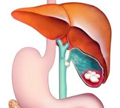

पित्ताशय

पित्ताशय मानव शरीर का एक खोखला अंग है, जो पाचन क्रिया में सहायता करता है और यकृत में उत्पन्न पित्त का भंडारण करता है। वयस्क मानव के पित्ताशय में करीब 50 मि.ली. की मात्रा में पित्त होता है। यकृत में उत्पन्न पित्त, अर्ध-पचित भोजन में मौजूद वसा को पायस बनाता है।
- वयस्कों में पूर्णतः खिंचे होने पर पित्ताशय लंबाई में लगभग 8 से.मी. व व्यास में 4 से.मी. होता है।
- इसके तीन भाग होते हैं- 'बुध्न', 'काया' व 'कंठ'। कंठ पतला होकर पित्ताशय वाहिनी के जरिए पित्तीय वृक्ष से जुड़ता है और फिर आम यकृत वाहिनी से जुड़कर आम पित्तीय वाहिनी बन जाता है।
- पित्ताशय में सरल स्तंभीय त्वचा कवचीय अस्तर होता है, जिनमें खाँचे होते हैं। ये खाँचे एस्चोफ़ के खाँचे कहलाते हैं, जो कि अस्तर के अंदर जेबों की तरह होते हैं।
- त्वचा कवच वाली परत के ऊपर संयोजी ऊतक होता है। संयोजी ऊतक के ऊपर चिकनी पेशी की एक भित्ति होती है, जो लघ्वांत्राग्र द्वारा रिसे गए पेप्टाइड हॉर्मोन, कोलेसिस्टोकाइनिन की प्रतिक्रियास्वरूप सिकुड़ जाती है। मूलतः इसमें संयोजी ऊतक को सेरोसा व एड्वेंटीशिया से भिन्नित करने वाला कोई सबम्यूकोसा नहीं होता है, लेकिन संक्रमण से बचाव के लिए माँसपेशियों के ऊतकों का एक पतला अस्तर होता है।
- वयस्क मानव के पित्ताशय में करीब 50 मि.ली. की मात्रा में पित्त होता है और जब चर्बी युक्त भोजन पाचन मार्ग में प्रविष्ट होता है तो कोलीसिस्टोकाइनिन का रिसाव होता है, जिससे यह पित्त स्रवित होता है। यकृत में उत्पन्न पित्त, अर्ध-पचित भोजन में मौजूद वसा को पायस बनाता है।
- यकृत छोड़ने के बाद पित्ताशय में संचित होने पर पित्त और अधिक गाढ़ा हो जाता है, जिससे इसका वसा पर असर और प्रभावी हो जाता है। अधिकतर पाचन लघ्वांत्राग्न में होता है।
- अधिकतर रीढ़ की हड्डी वाले पशुओं के पित्ताशय होते हैंऔर बिना रीढ़ की हड्डी वाले पशुओं में पित्ताशय नहीं होते हैं।